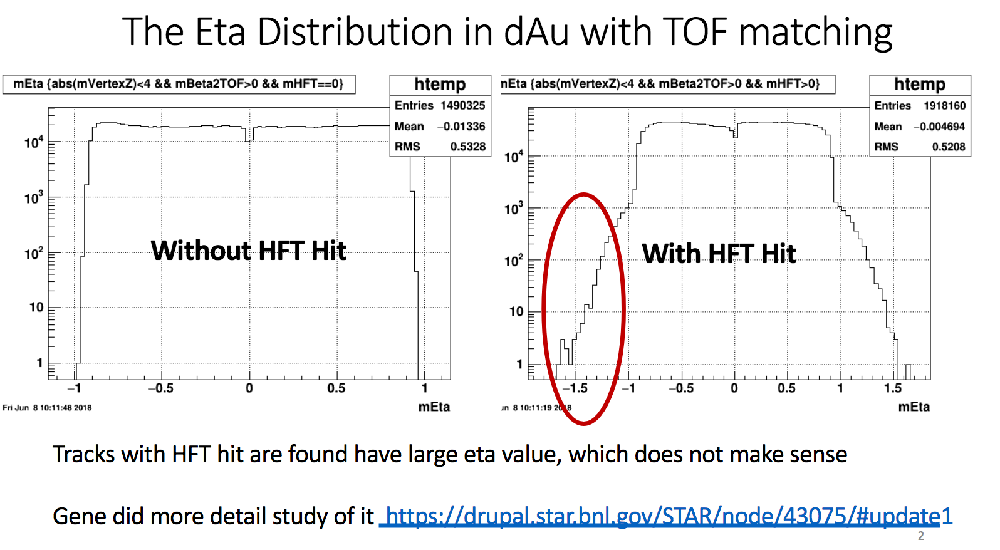
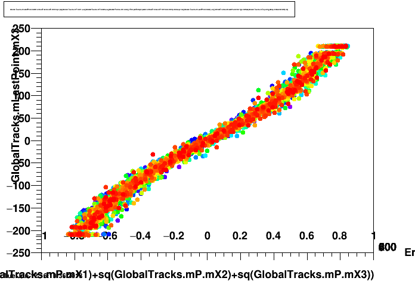
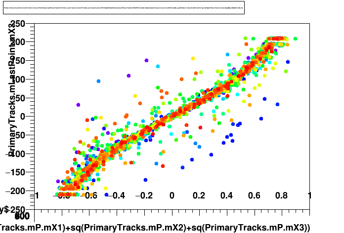

Investigating Issues with Vertex Reconstruction in Run 16
dAu 200 GeV
Dmitri Smirnov
January 9, 2019
Updated
<h1>The Problem</h1> - Observations reported by Shengli Huang - [S&C meeting, June 13, 2018](https://drupal.star.bnl.gov/STAR/event/2018/06/13/software-and-computing-meeting) - https://drupal.star.bnl.gov/STAR/system/files/dAuHFTTrack.pdf 
<h1>The Problem</h1> - Gene confirmed the issue by identifying tracks with nonsensical pseudorapidity - https://drupal.star.bnl.gov/STAR/node/43075/ - Define metric z position of the last point on the track vs. track angle - Correlation for globals (left) and outliers for primaries (right) <div class="hcenter">   </div>
<h1>Reminder: Vertex Position Fit</h1> - The following is true for both STAR vertex finding algorithms, VFMinuit and PPV - VFMinuit and PPV primarily differ in how vertex seeds are found, plus some track/vertex QA seletion cuts - Vertex position is found by minimizing $\chi^2$ for a set of selected tracks - Important: Actuall $\chi^2$ terms are modified as $s \bigg( 1 - \exp\Big(- \frac{\chi^2}{s} \Big) \bigg)$
<h1>Modified $\chi^2$</h1> <iframe width="90%" height="70%" class="hcenter" style="border: 1px solid #ccc;" scrolling="auto" src="graphics/plot_robust_chi2.html"></iframe>
<h1>Modified $\chi^2$</h1> <iframe width="90%" height="70%" class="hcenter" style="border: 1px solid #ccc;" scrolling="auto" src="graphics/plot_robust_chi2_frac.html"></iframe>
<h1>Track "Angle" vs "Exit point" Corr.:<br>s=100 vs s=250</h1> <iframe width="90%" height="70%" class="hcenter" style="border: 1px solid #ccc;" scrolling="auto" src="graphics/plot_angle_vs_lpz_s0250.html"></iframe>
<h1>Track "Angle" vs "Exit point" Corr.:<br>s=100 vs s=500</h1> <iframe width="90%" height="70%" class="hcenter" style="border: 1px solid #ccc;" scrolling="auto" src="graphics/plot_angle_vs_lpz_s0500.html"></iframe>
<h1>Track "Angle" vs "Exit point" Corr.:<br>s=100 vs s=1000</h1> <iframe width="90%" height="70%" class="hcenter" style="border: 1px solid #ccc;" scrolling="auto" src="graphics/plot_angle_vs_lpz_s1000.html"></iframe>
<h1>Tracks with Unwanted "Angle" vs "Exit point" Corr.:<br>s=100 vs s=250</h1> <iframe width="90%" height="70%" class="hcenter" style="border: 1px solid #ccc;" scrolling="auto" src="graphics/plot_angle_bad_s0100_s0250.html"></iframe>
<h1>Tracks with Unwanted "Angle" vs "Exit point" Corr.:<br>s=100 vs s=500</h1> <iframe width="90%" height="70%" class="hcenter" style="border: 1px solid #ccc;" scrolling="auto" src="graphics/plot_angle_bad_s0100_s0500.html"></iframe>
<h1>Tracks with Unwanted "Angle" vs "Exit point" Corr.:<br>s=100 vs s=1000</h1> <iframe width="90%" height="70%" class="hcenter" style="border: 1px solid #ccc;" scrolling="auto" src="graphics/plot_angle_bad_s0100_s1000.html"></iframe>
<h1>Tracks with Expected "Angle" vs "Exit point" Corr.:<br>s=100 vs s=250</h1> <iframe width="90%" height="70%" class="hcenter" style="border: 1px solid #ccc;" scrolling="auto" src="graphics/plot_angle_good_s0100_s0250.html"></iframe>
<h1>Tracks with Expected "Angle" vs "Exit point" Corr.:<br>s=100 vs s=500</h1> <iframe width="90%" height="70%" class="hcenter" style="border: 1px solid #ccc;" scrolling="auto" src="graphics/plot_angle_good_s0100_s0500.html"></iframe>
<h1>Tracks with Expected "Angle" vs "Exit point" Corr.:<br>s=100 vs s=1000</h1> <iframe width="90%" height="70%" class="hcenter" style="border: 1px solid #ccc;" scrolling="auto" src="graphics/plot_angle_good_s0100_s1000.html"></iframe>
<h1>Change in Vertex Position: s=100 vs s=250</h1> <div class="hcenter" style="height: 100%"> <iframe width="45%" height="40%" style="margin: 0em; border: 1px solid #ccc;" scrolling="auto" src="graphics/plot_vx_s0100_s0250.html"></iframe> <iframe width="45%" height="40%" style="margin: 0em; border: 1px solid #ccc;" scrolling="auto" src="graphics/plot_vy_s0100_s0250.html"></iframe> <iframe width="45%" height="40%" style="margin: 0em; border: 1px solid #ccc;" scrolling="auto" src="graphics/plot_vz_s0100_s0250.html"></iframe> </div>
<h1>Change in Vertex Position: s=100 vs s=500</h1> <div class="hcenter" style="height: 100%"> <iframe width="45%" height="40%" style="margin: 0em; border: 1px solid #ccc;" scrolling="auto" src="graphics/plot_vx_s0100_s0500.html"></iframe> <iframe width="45%" height="40%" style="margin: 0em; border: 1px solid #ccc;" scrolling="auto" src="graphics/plot_vy_s0100_s0500.html"></iframe> <iframe width="45%" height="40%" style="margin: 0em; border: 1px solid #ccc;" scrolling="auto" src="graphics/plot_vz_s0100_s0500.html"></iframe> </div>
<h1>Change in Vertex Position: s=100 vs s=1000</h1> <div class="hcenter" style="height: 100%"> <iframe width="45%" height="40%" style="margin: 0em; border: 1px solid #ccc;" scrolling="auto" src="graphics/plot_vx_s0100_s1000.html"></iframe> <iframe width="45%" height="40%" style="margin: 0em; border: 1px solid #ccc;" scrolling="auto" src="graphics/plot_vy_s0100_s1000.html"></iframe> <iframe width="45%" height="40%" style="margin: 0em; border: 1px solid #ccc;" scrolling="auto" src="graphics/plot_vz_s0100_s1000.html"></iframe> </div>
<h1>Summary</h1> - Investigating the effect of highly curved tracks in Run 14 dAu 200 GeV dataset - Increasing the scale in "robust potential" does reduce the effect - May lead to statistical fluctuations in otherwise unaffected vertices - $\sim 1\\%$ loss in primary tracks and vertices is observed with higher scale values<br> But `SL18d` does not include the fixes for $\sim 10\\%$ of tracks restored in `SL18h` - Will may need to support different scale values with DB entries